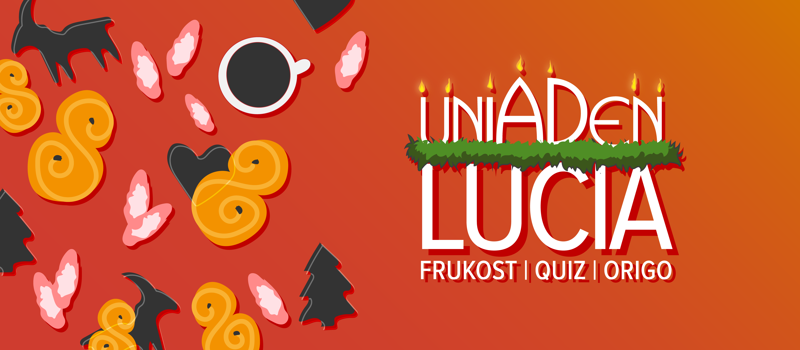
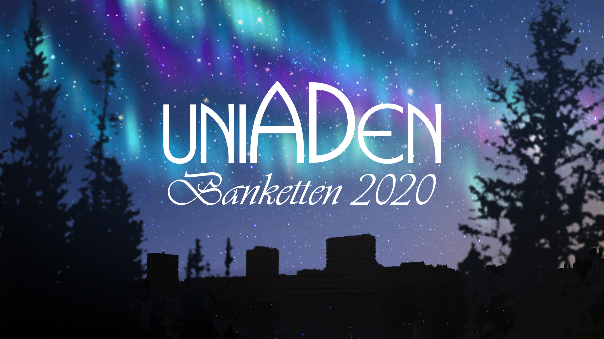
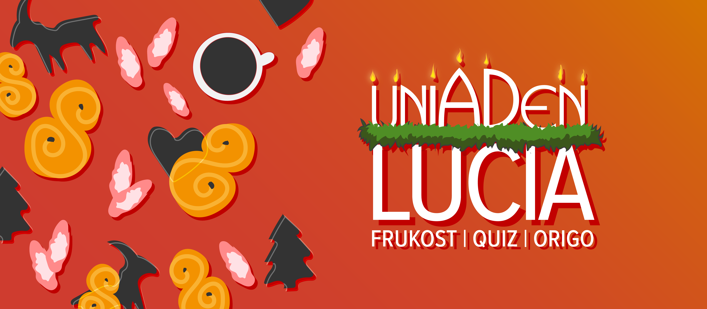
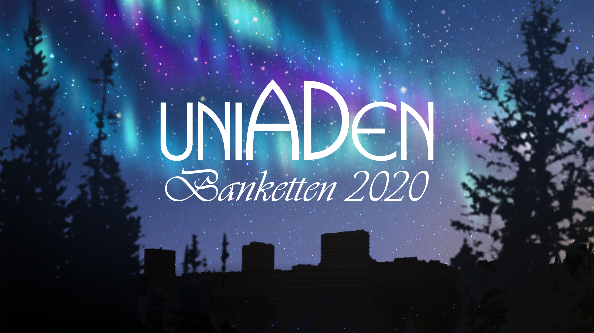

Under 2019-2020 har jag suttit som Art Director/Content Creator på Uniaden, en arbetsmarknadsmässa som varje år ordnas i Umeå. Positionen har innefattat en ansvarsroll kring kommunikations-, marknadsförings- och tryckt material samt produktion av detta.
Kommunikation innefattar informationsmaterial som har skickats ut gentemot företag, marknadsföring har främst riktat sig mot studenter vi vill ska besöka mässan och alla dess event, och det tryckta materialet har framförallt innefattat arbetströjor, tygkassar, men även print till mässbord. Föregående år har marknadsföring även funnits i form av tryck, men detta valdes bort detta år av miljöskäl vilket ledde till en större möjlighet gällande att kunna skapa rörligt material för sociala media osv.

Ovan; försättsblad för utskick till företag. Nedan; design av tryck.


 

Se alla projekt!


Se alla projekt!